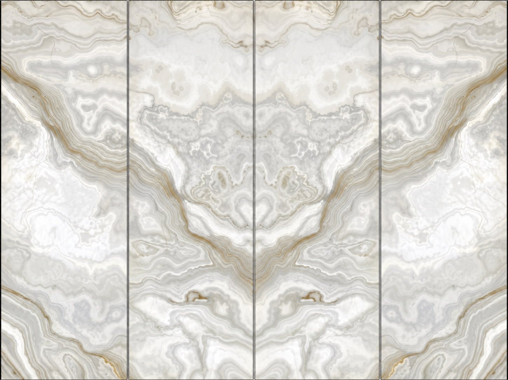
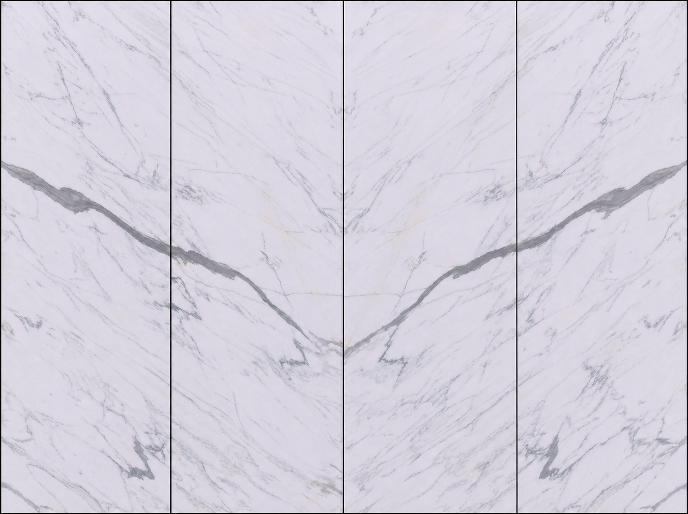
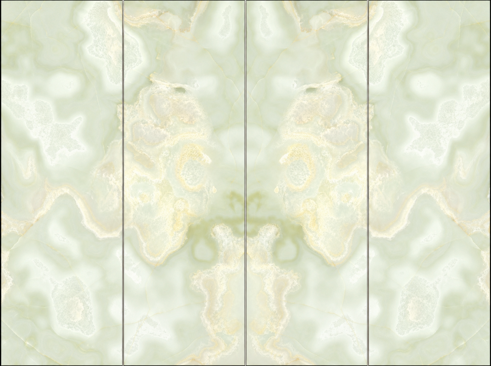

透 以 颜 · 臻 于 界

玻璃｜PVB｜石材｜PVB｜玻璃五层复合。精研热熔专利技术瓦解石材透光壁垒；3mm 极限超薄切割释放石材通透天性，同时增强紫外线阻隔与安全性。
| 构造 | Glass | PVB | Stone | PVB | Glass (GSG) |
|---|---|
| 石材 | 天然石材 3mm 级超薄切割 |
| 透光系统 | LED 光穹匀光板，24V，色温 2700–6500K 可调 |
| 规格 | 幕墙项目尺寸以不超过 1800×5000mm 为主，超大规格视项目需求可定制；谷仓门标准尺寸以 1200×2400mm 为主；发光墙板系统 1200×3000mm 以内；所有项目均可提供样板与打样服务。 |
天然石材每一片都独一无二







